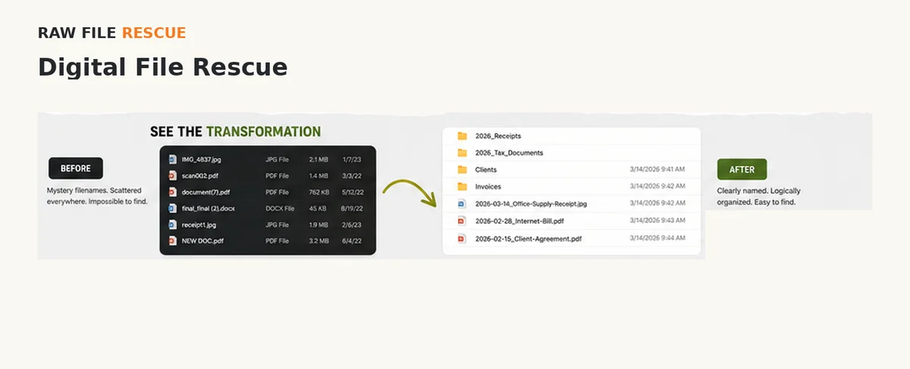
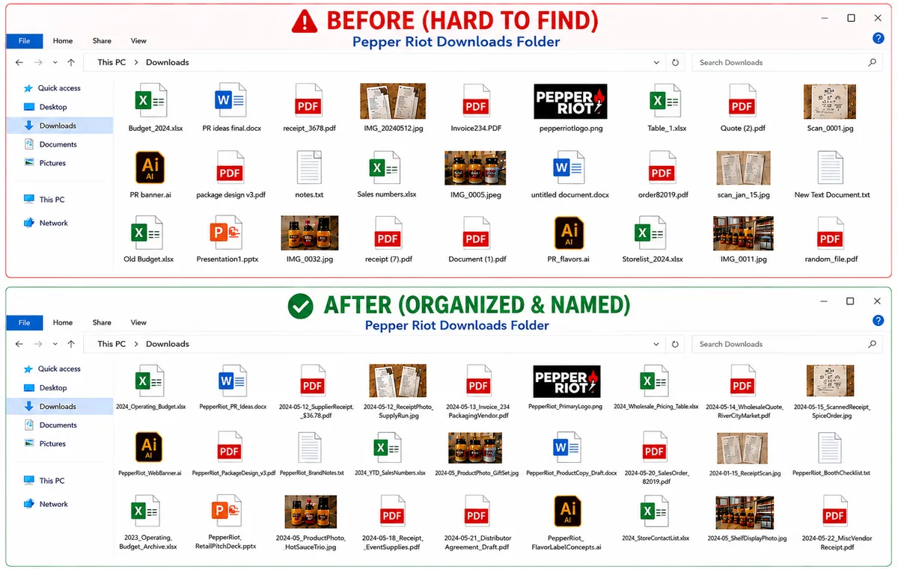
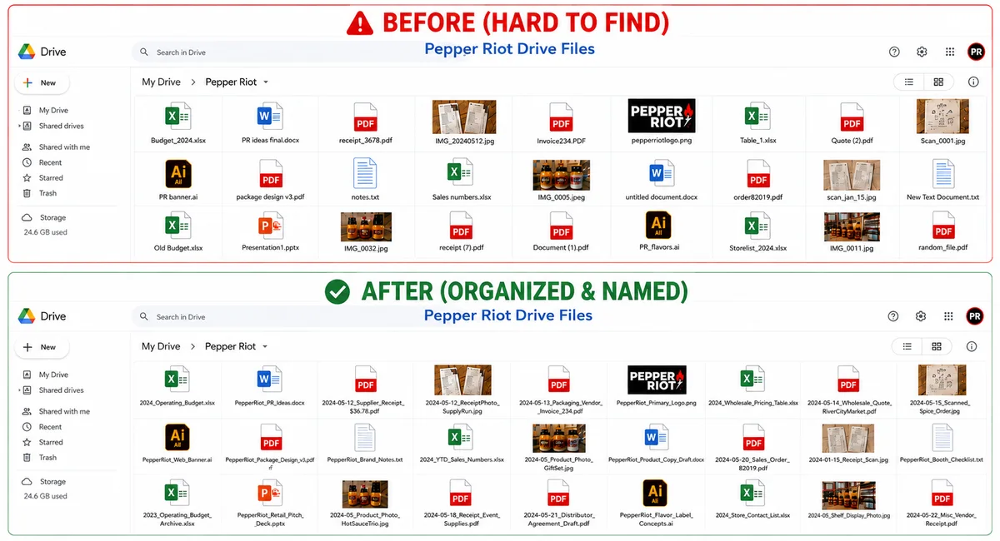
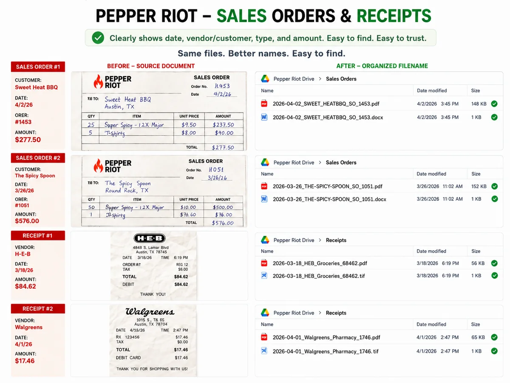
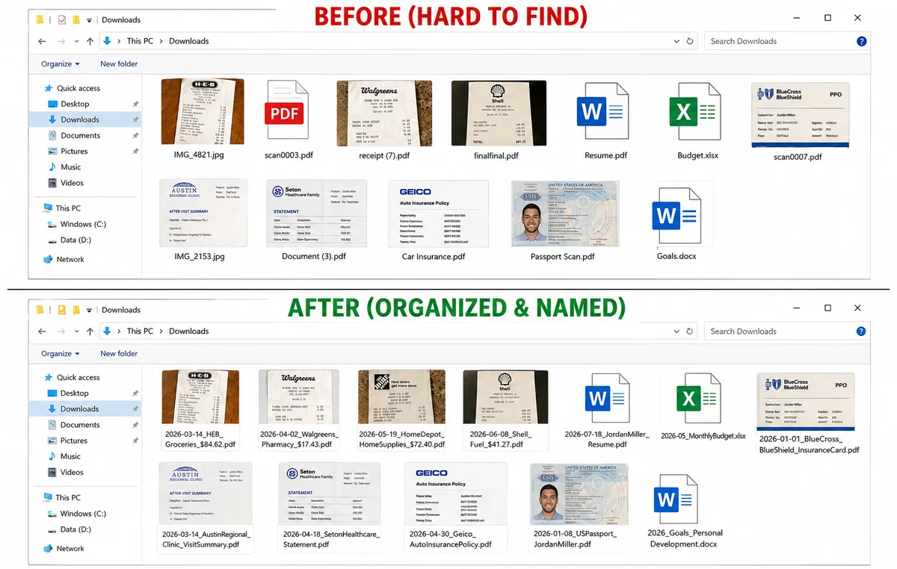
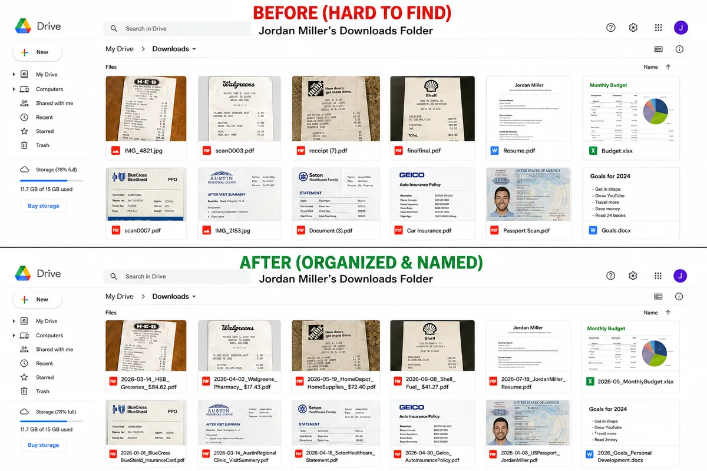
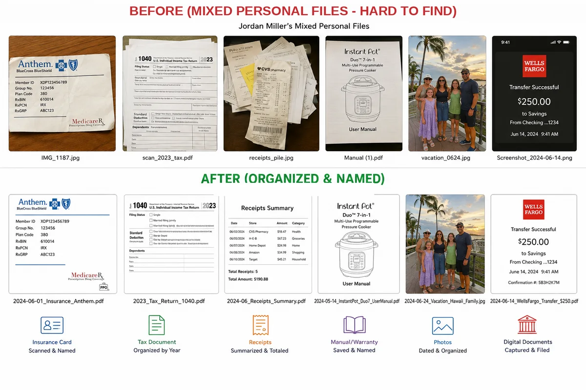
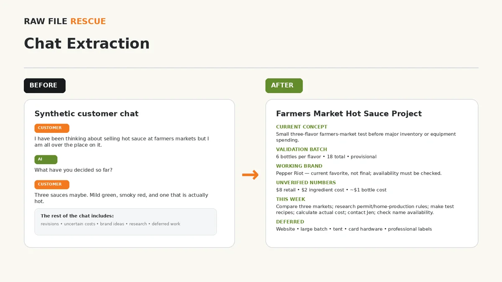
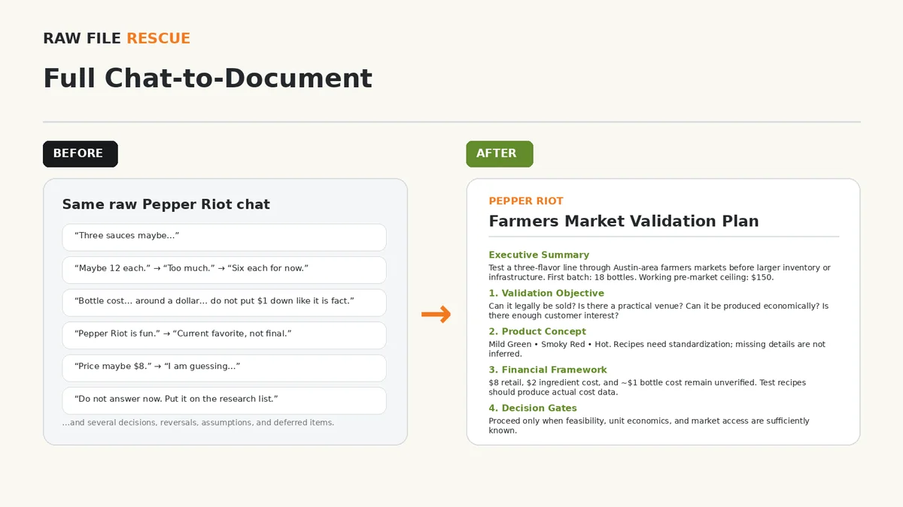

Tired of hunting for the same file?
Digital File RescueRaw File Rescue can sort through the backlog and leave you with a system that makes sense, so you know where to look next time.
View demonstrations →✓ Complimentary consultation—no charge before you approve the written plan and paid work begins
When files, paper, or AI chats start slowing you down, Raw File Rescue helps turn the backlog into information you can actually find, understand, and use.
Raw File Rescue is a new service built on years of hands-on office, administrative, organizational, and records-related experience.
What “pilot” means: Pilot describes the introductory phase of the service—not experimental handling of customer files. Before paid work begins, you see what I’ll do, what you’ll receive, the expected cost, and the safeguards that apply. You stay in control of access and deletion decisions.

Know where to look and get to important information faster.
Spend less time hunting through backlogs and more time using what you already have.
Nothing is intentionally deleted without your review.
The solution depends on what your backlog actually needs.
Customer work is performed by Chris Guittard, owner/operator.
Tell me what's getting in your way. The solution comes second.
Raw File Rescue can sort through the backlog and leave you with a system that makes sense, so you know where to look next time.
View demonstrations →Invoices, receipts, statements, and project files can be brought into a practical system that's easier to use and maintain.
View business demonstrations →Turn the conversation into a clean working document, summary, action list, or project record you can actually use.
View chat demonstrations →Turn information buried across files and documents into a usable table, inventory, list, or structured record.
See Information Pulled Into a Usable Spreadsheet →Turn a manageable paper backlog into information that's easier to search and retrieve, while the originals stay with you.
View demonstration →Bring the pieces together into one understandable system instead of keeping separate piles that don't connect.
View demonstration →Turn an overloaded bookmark collection into a manageable set of links you can actually find and use.
For remote projects, you send an exported bookmark file - no browser password or account access needed. Anything that looks outdated, duplicated, or broken is flagged for your review rather than deleted automatically.
See the cleanup approach →That's a different service. Raw File Rescue organizes material you can already access; Raw File Rescue does not provide forensic recovery, failed-drive recovery, or hardware repair.
The goal is simple: find what you need, understand what you have, and keep it usable.
These fictional examples show what Raw File Rescue can do. No customer files are shown. Every job is planned around the material you actually want help with.
YOU control which documents you want us to have access to!
For standard remote work, you share only the files or folders included in the plan you approved. Raw File Rescue does not ask for your account password. Before I make changes to files you control, I confirm with you that a backup or recoverable starting copy exists. Anything that might be deleted is set aside for your review. I do not permanently delete your files as part of the standard pilot process.
Pepper Riot is a fictional business created to show how scattered business records can become easier to find, understand, and use.



Downloads, cloud-drive folders, and mixed paper-and-digital material can become a system you can understand and keep using.



Long AI conversations can become clear working documents, key points, action lists, and project records you can actually use.


DIY FILE RESCUE
Search your Drive for “Untitled.” Open each file, decide whether it's worth keeping, and rename it based on what it actually contains. It's a simple cleanup that can make important files much easier to find.
That's where Raw File Rescue comes in. I can take the repetitive cleanup off your plate and leave you with a system you can understand and keep using.
Want to tackle it yourself? See these cloud-cleanup how-to guides from the Fashion Institute of Technology.
Stop living with names like Untitled, IMG_4832, or Final_Final_2. Give files names that tell you what they contain.
Look for copies, numbered files, and suspiciously similar versions that may be taking up space or causing confusion.
Check the file name, size, date, and contents before removing anything. Raw File Rescue follows the same principle: Review Before Delete.
When your platform supports it, use version history instead of creating Draft1, Draft2, Final, and Final2.
If one file belongs in two places, a shortcut can be better than maintaining copies that may drift apart.
FILE HORROR STORIES
These real-world examples show why clear filenames, deliberate saving, and sensible version control matter.
Two unnamed Word documents had remained open and unsaved for weeks. After the Mac restarted, the work disappeared and there were no meaningful filenames to search for.
Name it. Save it. Know where it lives.
Older OneDrive versions replaced newer work that had been edited offline, leaving the owner unsure which copy contained the latest changes.
Know which copy is current and use a sane versioning system.
A document was duplicated, edited, and then swapped back into the master-file workflow. Ambiguous filenames and manual replacement made the finished edits difficult to recover.
Avoid unclear manual swaps; use consistent names and version history.
A OneDrive and WhatsApp sharing workflow stripped away useful filenames, leaving a collection of documents that no longer clearly identified themselves.
Filenames carry information. Preserve them when files move between platforms.
You can do all of this yourself.
If you know something needs fixing but don't want to spend hours sorting it out, see how the process works.
See How It WorksNo charge before you approve the written plan and paid work begins.
$30/hour for approved paid work, billed in 15-minute increments. Billing begins only after you approve the written plan.
Paid time is recorded through Clockify; an itemized time report is available on request.
Every backlog is different. We start by talking through the problem. Before paid work begins, I give you a written plan showing what I’ll do, what you’ll receive, the expected cost, and the maximum project cost unless you approve a change.
The $30/hour rate applies to approved paid work. The initial inquiry, basic fit check, consultation, risk review, and preparation of the written plan are complimentary unless you explicitly authorize a paid assessment.
Your written plan includes an expected total and a maximum project cost covering paid work, customer-specific travel time, approved travel expenses, and approved outside costs. I calculate the 80% warning point for your specific job and show it in dollars and, when labor is the main cost, approximate hours. I stop for written approval before going over the maximum.
I also ask before adding an extra on-site trip, a new type of work, a new source of material, a different access method, or another approved expense that was not part of what we agreed.
A $22/hour employee costs an employer at least about $23.68/hour after employer Social Security and Medicare taxes alone. Using the average private-industry wage share reported by the U.S. Bureau of Labor Statistics gives an illustrative total-compensation cost of about $31.50/hour.
That estimate is not including recruiting, equipment, training, supervision, and other business costs.
Sources: Internal Revenue Service payroll-tax tutorial and U.S. Bureau of Labor Statistics, Employer Costs for Employee Compensation.
Show me what's scattered, difficult to find, or taking too much time.
I review the material, ask questions, and spell out what I’ll do, what you’ll receive, and what it should cost.
I do the work we agreed on and check with you before making a meaningful change or going over the approved maximum.
You get the result in a form you can actually use - and know where it lives.
Potential deletions are reviewed before permanent removal.
Temporary copies I make while working are ordinarily deleted seven calendar days after your finished work is sent or made available, and I record that the deletion was completed.
Before I change files you control, I confirm with you that a backup or recoverable starting copy exists.
Paper scanning is done on site. You keep control of your originals.
Before paid work begins, we document what I’ll do, what you’ll receive, what it should cost, and how your material will be handled.
Before paid work starts: the initial inquiry, fit check, discussion, consultation, and preparation of the written plan are complimentary.
If you cancel before paid work starts: prepaid labor is refunded in full. Outside expenses you already approved and that were already incurred may not be refundable.
If you cancel after paid work starts: you pay for work already completed and approved expenses already incurred. Any unused prepaid labor is refunded.
Paid work starts only after you approve the written plan and I begin the work described in it. Read the complete policy (PDF).
Raw File Rescue collects only the information reasonably needed to evaluate and complete the agreed project. Customer material is not sold or used for unrelated purposes.
Temporary copies I make while working are ordinarily deleted seven days after your finished work is sent or made available. I record when that deletion is completed.
Using an outside AI service with your material is optional and requires your express permission. For bookmark cleanup, you send an exported bookmark file; I do not ask for your browser password or account access.
If you share a cloud folder with Raw File Rescue, access is limited to what you approved. When the job is finished, I remove my access where possible and confirm with you that any sharing you control has been turned off. I record that closeout.
Potential deletion decisions remain subject to Review Before Delete. Read the complete policy (PDF).
Before paid work begins, you receive a written plan showing what I’ll do, what you’ll receive, the expected cost, and the maximum project cost. I ask before adding an extra unplanned trip, a new type of work, a new source of material, a different access method, another approved expense, or anything that would push the project over the maximum. Your written plan also shows the 80% warning point in dollars and, when useful, approximate labor hours.
One basic correction round is included for errors or reasonable adjustments within what we agreed. New requests may require a revised estimate.
I keep written records of what we agreed to, what work was done, what was delivered, and how the job was closed out. When relevant, that includes confirming shared cloud access was closed and temporary working copies were deleted.
I ask for extra permission before using an outside AI service, a remote-access tool, making decisions about possible duplicate versions, or taking another step that creates a meaningful new risk.
That's fine. Tell me what's giving you trouble, and I'll help figure out a practical way to tackle it. You'll see the written plan and estimate before any paid work begins.